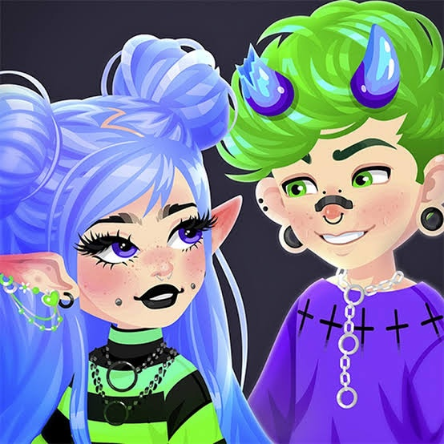
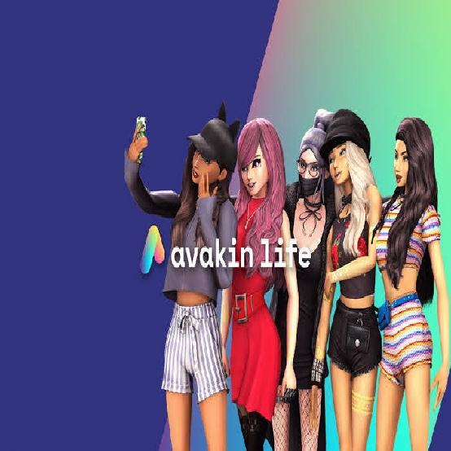
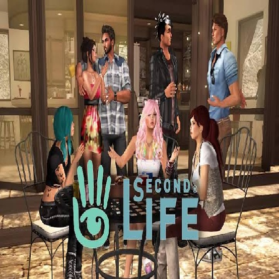
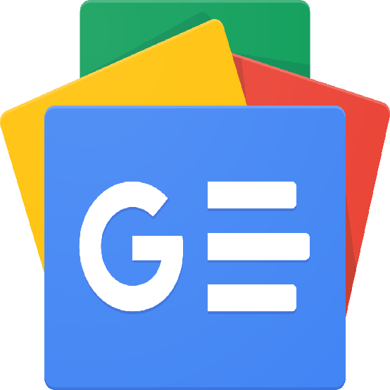
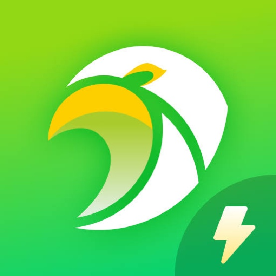

Accueil
Accueil Médias sociaux
Médias sociaux Streaming VF et VOSTFR
Streaming VF et VOSTFR Apprendre
Apprendre IA
IA Éditer
Éditer Développer
Développer E-Services
E-Services Explorer le monde
Explorer le monde Mobiles et Pc
Mobiles et Pc Découvrir plus
Découvrir plus À Propos
À Propos Gmail
Gmail Facebook
Facebook Tiktok
Tiktok Instagram
Instagram GitHub
GitHubBienvenue dans la section Médias sociaux
Bienvenue dans un espace où tous les types de médias sociaux sont à votre portée. Que vous soyez passionné par les dernières tendances ou à la recherche de plateformes uniques, vous trouverez ici des catégories variées à explorer. Plongez dans l'univers des réseaux sociaux, découvrez des communautés surprenantes, et trouvez celle qui vous correspond. Laissez-vous séduire par des expériences inédites et inspirantes, et partez à la découverte de tout ce que les médias sociaux ont à offrir.
Alors, que cherchez-vous ?
Je cherche :
Les sites médias sociaux polyvalents
 Facebook
Facebook
Facebook est une plateforme de réseautage social permettant aux utilisateurs de créer des profils, d'ajouter des amis, de partager des photos, des vidéos et des mises à jour de statut, ainsi que de communiquer via des messages et des groupes. Elle propose également des fonctionnalités de découverte de contenu, de publicité ciblée, et de gestion d'événements.
 Instagram
Instagram
Instagram est une plateforme de partage de photos et de vidéos où les utilisateurs peuvent publier du contenu, suivre d'autres profils, aimer et commenter les publications, et utiliser des stories temporaires et des reels pour créer et découvrir du contenu visuel.
 X
X
X (anciennement Twitter) est une plateforme de microblogging où les utilisateurs publient des messages courts appelés tweets, suivent d'autres comptes, et interagissent avec du contenu par des likes, des retweets et des réponses.
 Telegram
Telegram
Telegram est une application de messagerie instantanée offrant des discussions privées et de groupe, des canaux de diffusion, des appels vocaux et vidéo, et des fonctionnalités de sécurité avancées avec cryptage de bout en bout.
WhatsApp est une application de messagerie instantanée offrant des messages texte, appels vocaux et vidéo, partage de fichiers, discussions de groupe, et un cryptage de bout en bout pour assurer la confidentialité.
 Snapchat
Snapchat
Snapchat est une application de messagerie où les utilisateurs envoient des photos et des vidéos temporaires, appelées snaps, qui disparaissent après consultation. Elle propose aussi des stories, des filtres et des effets de réalité augmentée.
 LinkedIn
LinkedIn
LinkedIn est un réseau social professionnel permettant aux utilisateurs de créer des profils, se connecter avec des contacts, rechercher des opportunités d'emploi, et partager des expériences professionnelles.
 OK.ru
OK.ru
OK.ru (Odnoklassniki) est un réseau social russe permettant aux utilisateurs de publier des photos, des vidéos, des mises à jour de statut, et d'interagir via des messages, des commentaires et des groupes.
Les plateformes de partage de vidéos
 Youtube
Youtube
YouTube est une plateforme de partage de vidéos où les utilisateurs peuvent regarder, publier, commenter et s'abonner à des chaînes, avec des fonctionnalités de diffusion en direct et de monétisation.
Tiktok
TikTok est une plateforme de partage de courtes vidéos, souvent accompagnées de musique, où les utilisateurs créent, découvrent, et interagissent avec du contenu viral via des likes, des commentaires et des défis.
 Twitch
Twitch
Twitch est une plateforme de streaming en direct, principalement utilisée pour les jeux vidéo, où les créateurs diffusent du contenu en temps réel et interagissent avec leur audience via un chat en direct.
Discord
Discord est une plateforme de communication permettant aux utilisateurs de discuter en texte, voix et vidéo, créer des serveurs et des canaux, et participer à des communautés en ligne.
 Dailymotion
Dailymotion
Dailymotion est une plateforme de partage de vidéos où les utilisateurs peuvent télécharger, visionner, commenter et partager des vidéos, avec des fonctionnalités similaires à YouTube.
 Dlive
Dlive
DLive est une plateforme de streaming en direct qui utilise la technologie blockchain pour permettre aux créateurs de diffuser du contenu en temps réel et de monétiser leur audience sans commissions sur les revenus.
Les plateformes libre d'expression
Crowdbunker
Crowdbunker est une plateforme de diffusion vidéo axée sur la liberté d'expression, permettant aux utilisateurs de publier et partager des vidéos en direct ou enregistrées sans censure.
 Rumble
Rumble
Rumble est une plateforme de partage de vidéos qui permet aux utilisateurs de publier, regarder et monétiser du contenu, avec un accent sur la liberté d'expression et une politique de modération plus souple.
 Parler
Parler
Parler est un réseau social axé sur la liberté d'expression, permettant aux utilisateurs de publier des messages, des images et des vidéos, avec une modération minimale du contenu.
 Odysee
Odysee
Odysee est une plateforme de partage de vidéos décentralisée, basée sur la technologie blockchain, permettant aux utilisateurs de publier, découvrir et monétiser du contenu avec une modération minimale.
Les sites réseaux sociaux pour discuter avec des personnages IA
 Character.ai
Character.ai
Character.ai est une plateforme de chat où les utilisateurs interagissent avec des personnages virtuels dotés d'intelligence artificielle, capables de tenir des conversations et de simuler des personnalités diverses.
Venuschat.ai
VenusChat.ai est une plateforme où les utilisateurs interagissent avec des personnages virtuels alimentés par l'IA, permettant des conversations et des expériences personnalisées.
 Janitorai
Janitorai
JanitorAI est une plateforme où les utilisateurs interagissent avec des personnages virtuels alimentés par l'IA pour des dialogues et des expériences personnalisées.
Les sites réseaux sociaux virtuels
Highrise
Highrise est une application sociale en 3D où les utilisateurs créent des avatars, interagissent dans des espaces virtuels et participent à des activités communautaires.
Avakin Life
Avakin Life est un jeu de simulation sociale en 3D où les utilisateurs créent des avatars, explorent des environnements virtuels, interagissent avec d'autres joueurs et participent à diverses activités.
Secondlife
Second Life est un monde virtuel en 3D où les utilisateurs créent des avatars, construisent des espaces, interagissent avec d'autres personnes, et participent à diverses activités sociales et économiques.
Les sites de forums et d'échanges communautaires
Quora
Quora est une plateforme de questions-réponses où les utilisateurs posent des questions, partagent des réponses et discutent sur une variété de sujets.
Github
GitHub est une plateforme de gestion de code source permettant aux développeurs de collaborer sur des projets, d'héberger des dépôts et de suivre les modifications, idéale pour le versionnage et le partage de code.
 Reddit
Reddit
Reddit est un site de discussion où les utilisateurs soumettent des posts, commentent, et votent sur des sujets variés organisés en sous-forums appelés "subreddits".
 Viedemerde
Viedemerde
Viedemerde est un site de partage d'anecdotes humoristiques où les utilisateurs publient et votent sur des histoires de mésaventures quotidiennes.
 Skool
Skool
Skool est une plateforme en ligne gratuite permettant de créer et rejoindre des communautés éducatives pour apprendre et partager des connaissances sur divers sujets.
Wattpad
Wattpad est une plateforme de lecture et d'écriture où les utilisateurs publient, découvrent et lisent des histoires et des livres écrits par des auteurs amateurs et professionnels.
 Stackoverflow
Stackoverflow
Stack Overflow est un site de questions-réponses pour les développeurs, où les utilisateurs posent des questions techniques, répondent et votent sur des solutions liées à la programmation.
Les sites d'actualités
Google News
Google News est une plateforme agrégatrice qui regroupe et personnalise des articles d'actualité provenant de diverses sources à travers le monde.
 LeMonde
LeMonde
Le site LeMonde est une plateforme d'information en ligne qui propose des actualités, des analyses, et des enquêtes sur des sujets variés, tels que la politique, l'économie, et la culture. Une partie du contenu est accessible gratuitement, tandis que certaines sections sont réservées aux abonnés.
Scoopernews
Scoopernews est une plateforme de nouvelles où les utilisateurs peuvent lire, partager et commenter des articles, tandis que les contributeurs publient et rapportent des informations locales, nationales et internationales.
 Flashscore
Flashscore
Flashscore est une plateforme qui fournit des scores en direct, des résultats et des statistiques pour une large gamme de sports en temps réel.
Medium
Medium est une plateforme de publication où les utilisateurs partagent des articles et des idées sur divers sujets, avec un système de recommandation personnalisé et une option d'abonnement pour un accès complet.